Vad behöver lagas?
På ljusbordet nu
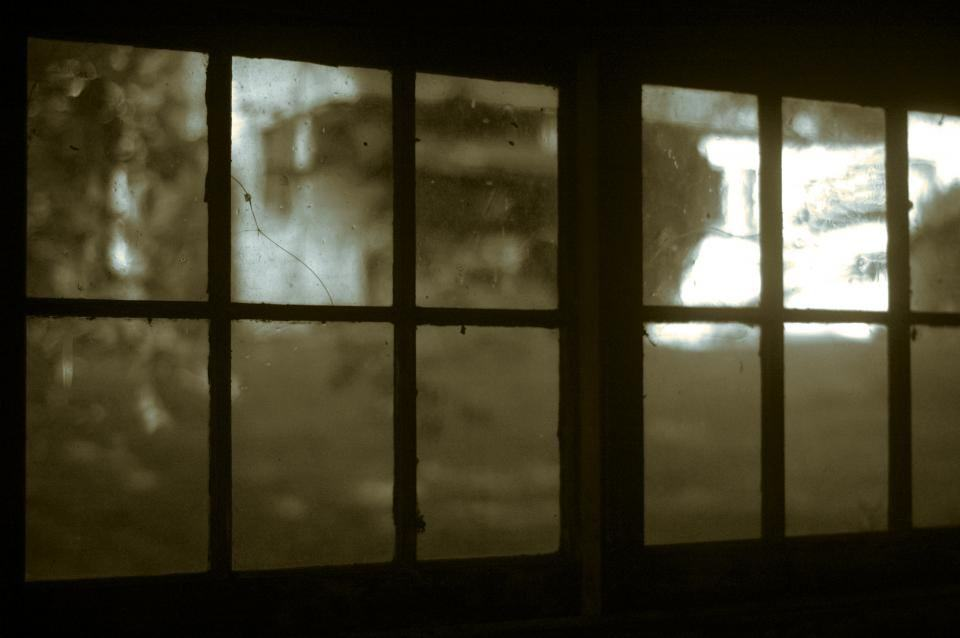
01Korfönstret i Tensta kyrka är tillbaka
Efter fjorton månader i ateljén sitter de medeltida glasbitarna på plats bakom ett nytt skyddsglas.
Läs mer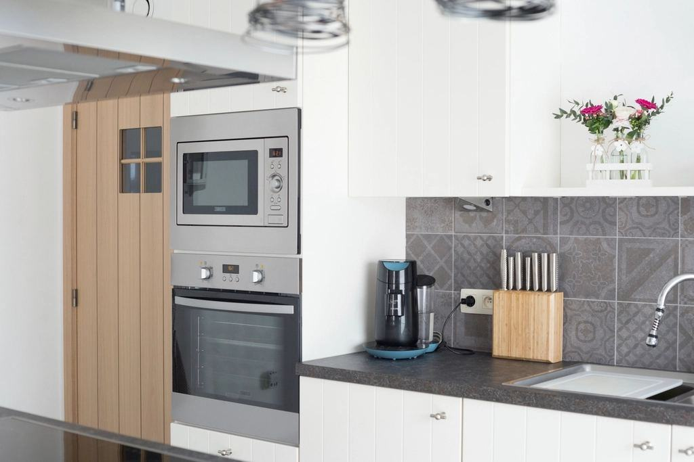
02Ny ugn för glasmålning
Den nya ugnen rymmer paneler upp till 90 × 120 cm och kan köras på lägre temperatur för känsliga glas.
Läs mer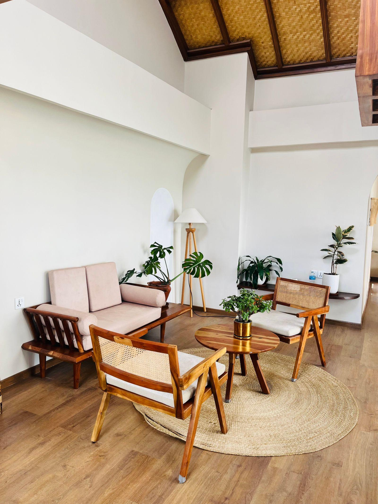
03Kittkurserna är fullbokade
Vårens fyra kurser fylldes på en vecka – vi öppnar fler datum i februari.
Läs mer
Ateljé, verkstad och fältlag
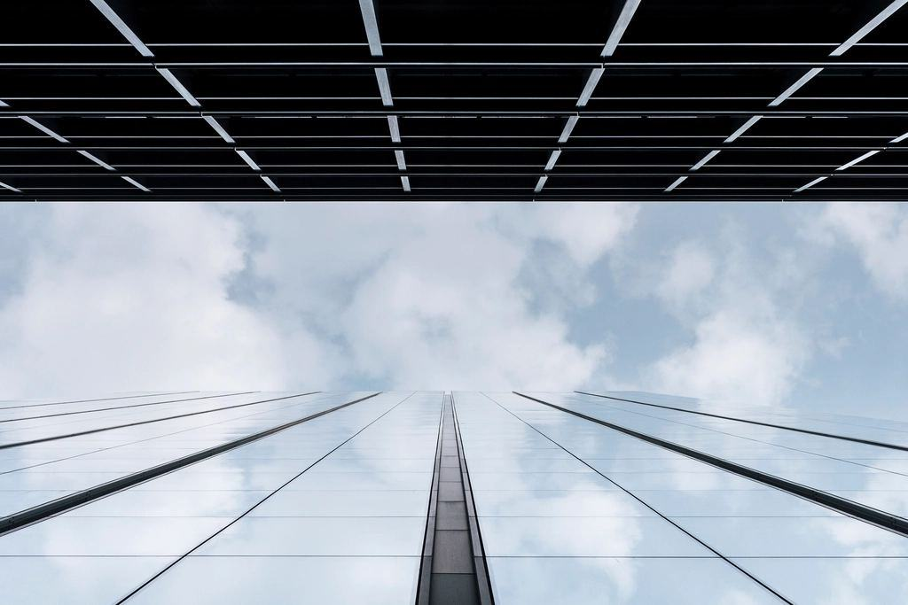
BlyglasateljénBly, lod och bränning
Här restaureras blyfönster och glasmålningar på ljusbord, och ugnen står i rummet bredvid.
Läs mer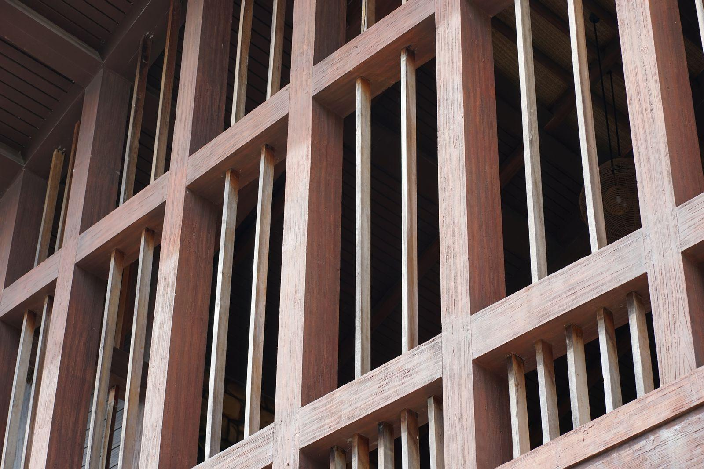
FönsterverkstadenKitt, linolja och värmepistol
Bågar från villor, prästgårdar och herrgårdar skrapas, kittas och målas i en verkstad med jämn temperatur.
Läs mer Fältlaget
FältlagetNär fönstret inte kan flytta
Två hantverkare som arbetar på plats från ställning eller lift, ofta i kyrkor som saknar el.
Läs mer
Det mest hållbara fönstret finns redan
Ett 200 år gammalt fönster av kärnvirke kan hålla i 200 år till. Vi byter bara det som är trasigt, använder linoljekitt och linoljefärg utan lösningsmedel och sparar alla hela gamla glas i vårt arkiv.
Läs om hur vi arbetar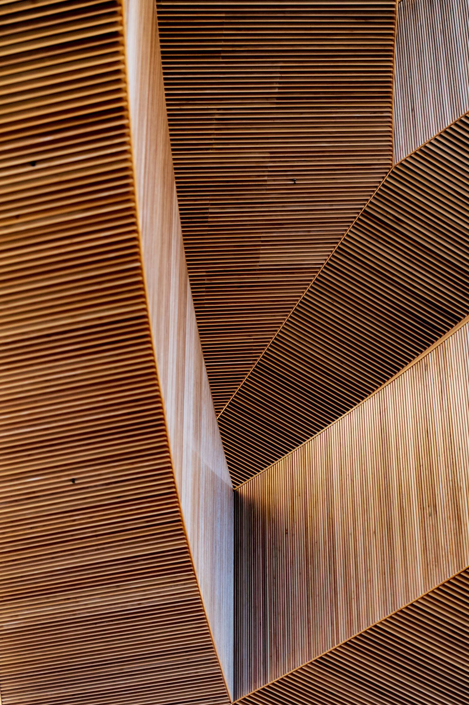
0185 %av originalglaset bevaras i våra kyrkouppdrag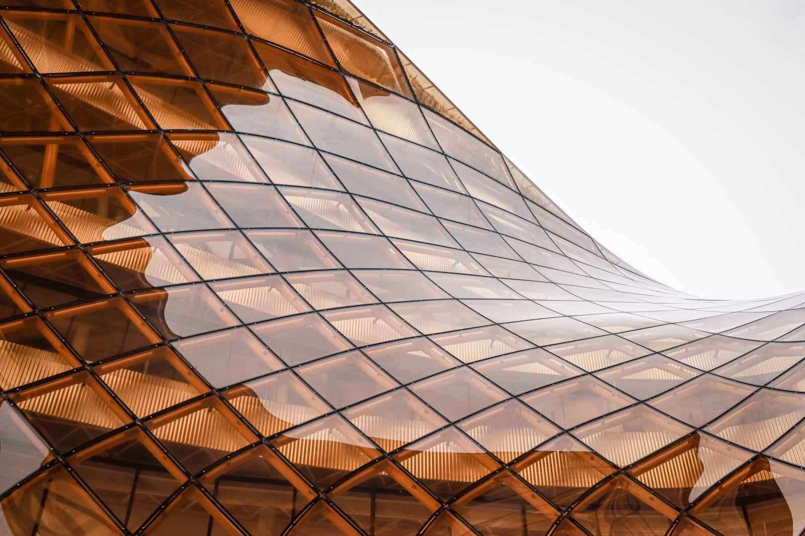
020lösningsmedel i färg och kitt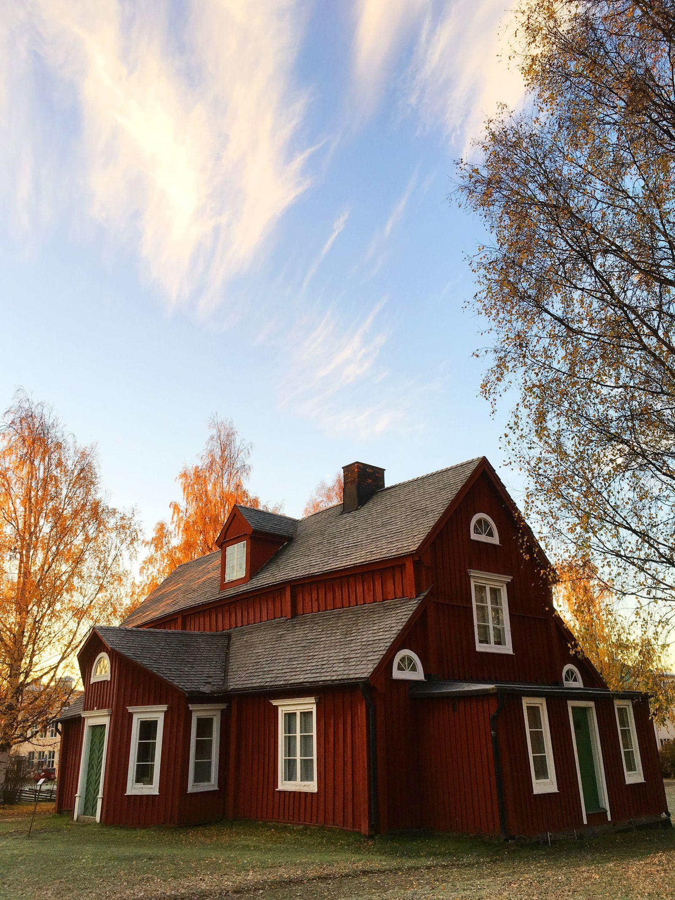
032 400gamla glas sparade i arkivet
Illustrationsbilder
Om gamla fönster och blyglas
- Illustrationsbild
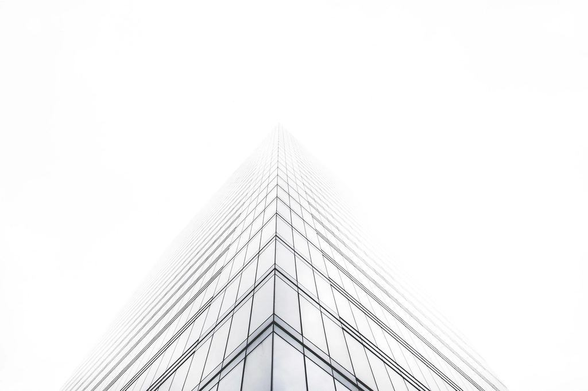
- Fråga 01
Kan ett sprucket blyfönster lagas utan att tas ner?
Enstaka sprickor kan vi ibland laga på plats med kopparfolie. Om blyet är sprött eller fönstret buktar måste det tas in till ateljén.
- Fråga 02
Varför ska man inte byta till nya fönster?
Gamla fönster av kärnvirke håller längre än nya om de sköts. Med en extra innerbåge eller energiglas i innerbågen blir de lika täta som moderna fönster.
- Fråga 03
Hur länge tar en kyrkfönsterrestaurering?
Från besiktning till återmontering brukar det ta 8–18 månader, beroende på antikvariska beslut och storlek.
Hittar du inte svaret? Ring eller mejla oss.
070-174 06 34Skicka en bild- Fråga 04
Var kommer det munblåsta glaset ifrån?
Vi köper cylinderglas från två glasbruk i Tyskland och Polen. Vi har också ett arkiv av gammalt glas från rivna fönster.

- Fråga 05
Får man bidrag för att renovera gamla fönster?
Församlingar kan söka kyrkoantikvarisk ersättning. Privatpersoner i k-märkta hus kan ibland få bidrag från länsstyrelsen, och ROT-avdrag gäller för arbetet.
Församlingar och kulturmiljöer
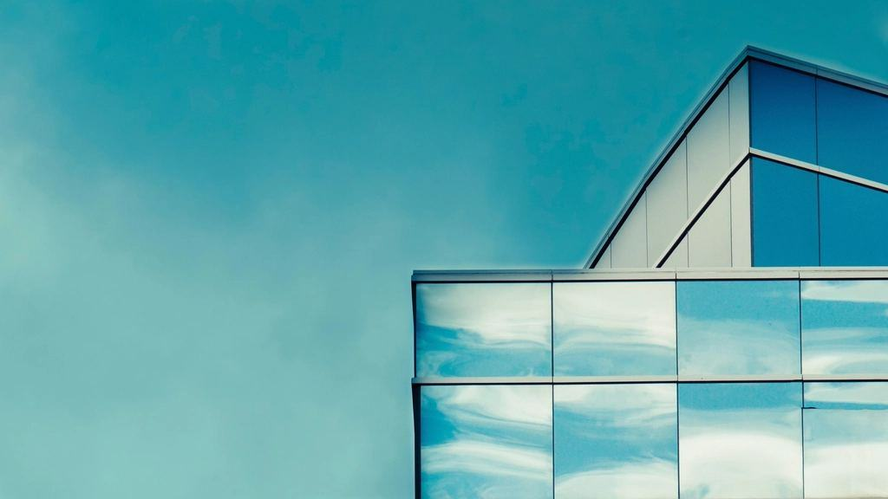
01 / 07UppdragsgivareAlla referenserUppsala stift
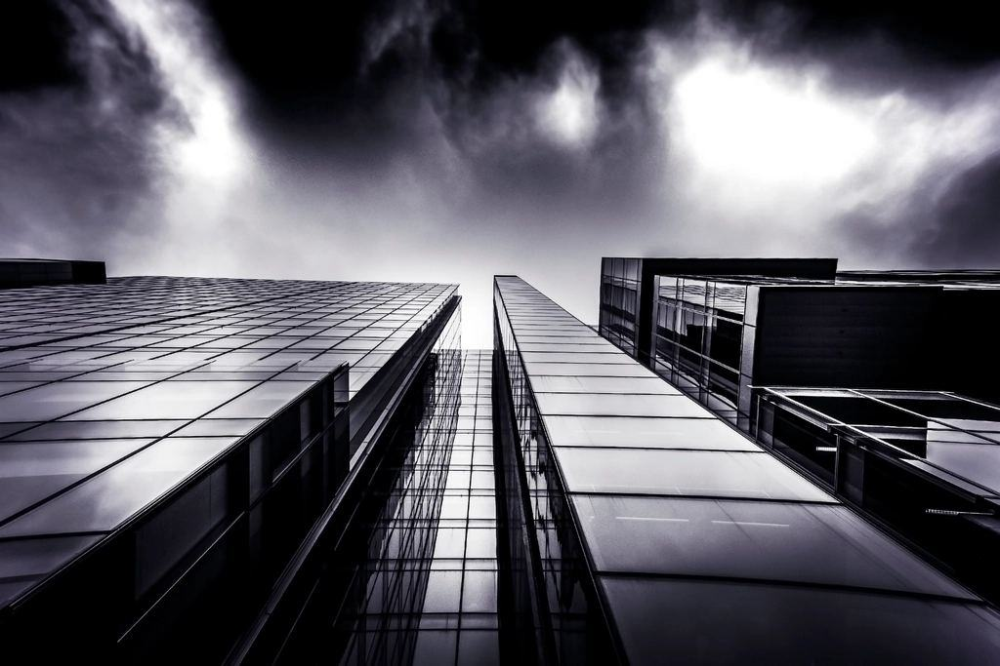
02 / 07UppdragsgivareAlla referenserTensta-Lena församling
 03 / 07UppdragsgivareAlla referenser
03 / 07UppdragsgivareAlla referenserVendels kyrkoråd
 04 / 07UppdragsgivareAlla referenser
04 / 07UppdragsgivareAlla referenserStiftelsen Lennartsnäs
 05 / 07IndustriAlla referenser
05 / 07IndustriAlla referenserLövstabrukets bruksförening
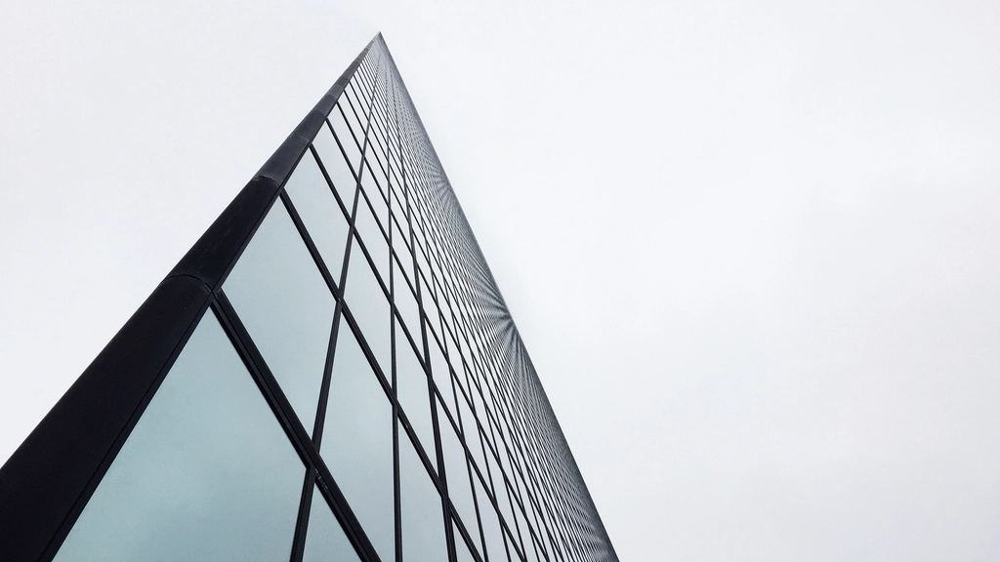
06 / 07FastighetsägareAlla referenserUppsala Kulturfastigheter
 07 / 07BostadsrättsföreningAlla referenser
07 / 07BostadsrättsföreningAlla referenserBrf Luthagsesplanaden
Från besiktning till rapport
- 01
Besiktning
Vi kommer ut, fotograferar och bedömer skicket på varje ruta och båge. Besiktningen kostar 2 400 kr och dras av vid beställning.
- 02
Åtgärdsförslag
Du får ett skriftligt förslag med vad som bör bevaras, vad som måste bytas och vad det kostar – som underlag till antikvarie eller länsstyrelse.
- 03
Arbete i ateljén
Bågar och blyfönster tas in till verkstaden. Öppningen täcks med tillfälliga skivor eller polykarbonat.
- 04
Återmontering och rapport
Fönstren sätts tillbaka och du får en rapport med bilder före och efter, och skötselråd.
Fönster vi har räddat
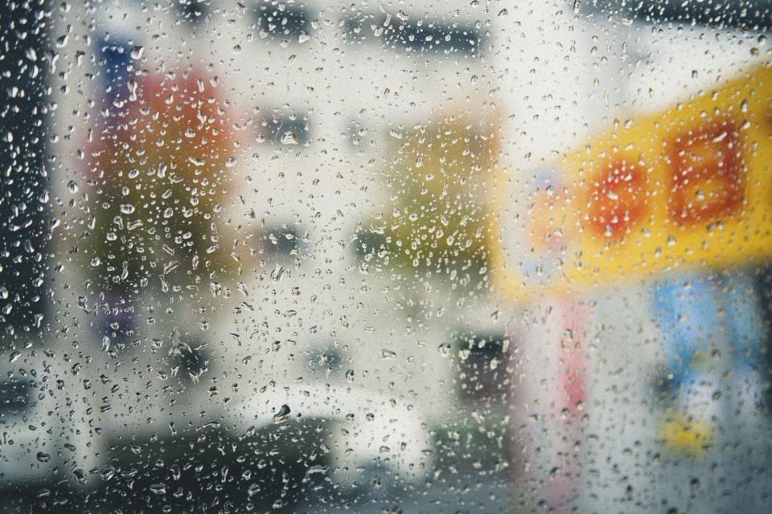
01Tensta kyrka, korfönster
UtförtVattholma · Restaurering av blyglas · 2026 02
02Herrgård vid Lennartsnäs
PågåendeUpplands-Bro · Fönsterrenovering, 68 bågar · 2026 03
03Villa i Luthagen
UtförtUppsala · Blyinfattade trapphusfönster · 2025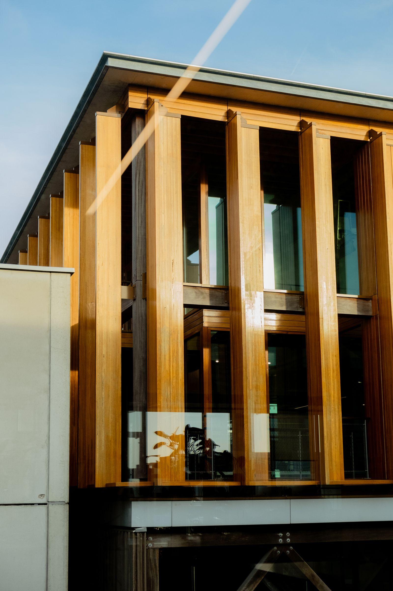
04Bruksmiljön i Lövstabruk
UtförtÖsthammar · Nytillverkning efter förlaga · 2025 05
05Prästgården i Knutby
UtförtUppsala · Kopplade bågar · 2024
Kyrkvärdar och husägare
- 01 / 03
”Antikvarien var med vid varje steg och sa att dokumentationen var den bästa hon sett från en entreprenör.”
Margareta H.Kyrkvärd, Tensta - 02 / 03
”Vi var beredda att byta alla fönster i villan. Fyris visade att 38 av 41 bågar gick att rädda och att det blev billigare.”
Daniel och Anna K.Luthagen, Uppsala - 03 / 03
”Kittkursen var den bästa lördagen i år. Nu sköter jag sommarstugans fönster själv.”
Lars-Erik B.Öregrund